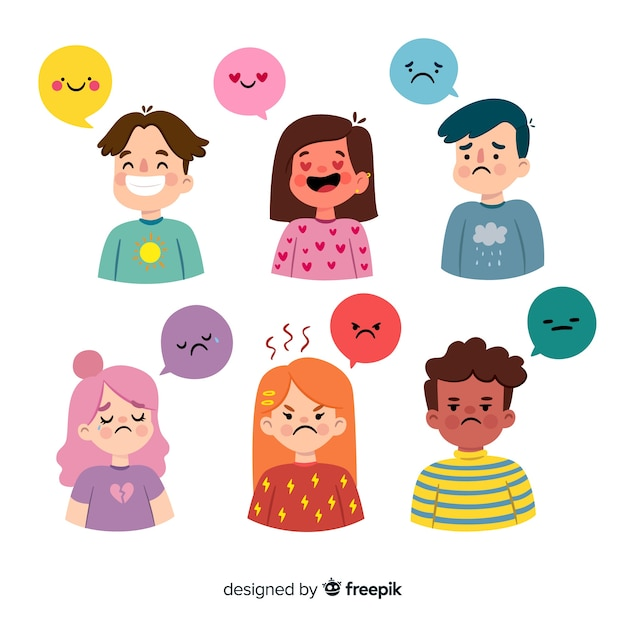

|
|||||||||||||||||||||||||||||||||||||||||||||||||||||||||||||||||||||||||||||||||||||||||||||||||||
| Colegio de Estudios Cientificos Y Tecnologicos Del
Estado de Mexico Plantel Ixtlahuaca Módulo III: Desarrolla Páginas Web Submódulo 2: Desarrolla aplicaciones que se ejecuten en el cliente Submódulo 3: Desarrolla aplicaciones que se ejecuten en el servidor Elaborado por: ODALIZ MARGARITA RUIZ BALDERAS Grupo:402 |
|||||||||||||||||||||||||||||||||||||||||||||||||||||||||||||||||||||||||||||||||||||||||||||||||||
El papel del profesor, como promotor de la conciencia social en los estudiantes, es crucial en el mundo actuar. Para promoverla, en esta lección llevara a los estudiantes a aplicar lo aprendido y a convertir las estrategias en acciones concretas para prevenir conflictos interpersonales en la escuela. Descubrirán, en compañía de su grupo, en transformar el medio ambiente social, desarrollan sus propias capacidades y cultivan su bienestar interior. |
|||||||||||||||||||||||||||||||||||||||||||||||||||||||||||||||||||||||||||||||||||||||||||||||||||
¿Que es un conflicto? Un conflicto es una pelea, disputa o discrepancia que se da cuando dos o más personas tienen intereses u opiniones que no pueden desarrollarse al mismo tiempo, es decir, que se contradicen. ¿Cuales son las estrategias para prevenir conflicto? Es indispensable mantener una comunicación adecuada basada en el respeto y la escucha, e identificar las causas de los conflictos para evitar que se repitan. Sé consciente de cómo te sientes y maneja tus emociones Evita buscar culpables o ver a la otra parte como un “contrario”. Habla con la persona o parte involucrada lo antes. 
| |||||||||||||||||||||||||||||||||||||||||||||||||||||||||||||||||||||||||||||||||||||||||||||||||||
|  |
|||||||||||||||||||||||||||||||||||||||||||||||||||||||||||||||||||||||||||||||||||||||||||||||||||